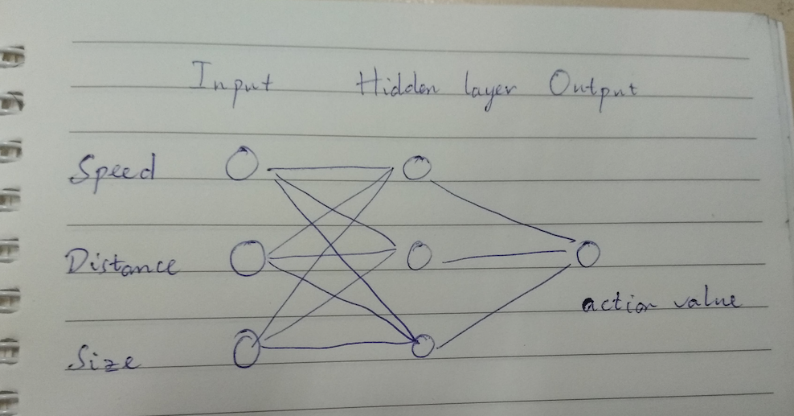
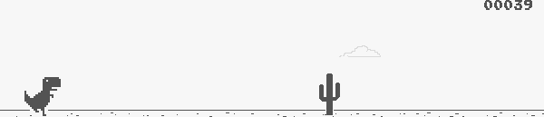

<!DOCTYPE html>
<html>

  <head>
    <meta charset="utf-8">
    <meta http-equiv="X-UA-Compatible" content="IE=edge">
    <title>Tạo bot chơi T-Rex trong Chrome (phần 3) - Setup môi trường training</title>

    <meta name="viewport" content="width=device-width">
    <meta name="description" content="">

    
    

    <link rel="canonical" href="http://localhost:4000/tao-bot-choi-dinosaur-chrome-3/">
    <link rel="icon" type="image/png" href="assets/img/logo_white.png">

    <!-- Custom CSS -->
    <link rel="stylesheet" href="/css/monster.css">

    <!-- MathJax Configuration -->
    
    <script>
      window.MathJax = {
        tex: {
          inlineMath: [['$', '$']],
          displayMath: [['\\[', '\\]']],
          processEscapes: true,
          processEnvironments: true,
          tags: 'ams'
        },
        options: {
          skipHtmlTags: ['script', 'noscript', 'style', 'textarea', 'pre'],
          processHtmlClass: 'tex2jax_process'
        },
        startup: {
          ready: function() {
            MathJax.startup.defaultReady();
          }
        }
      };
    </script>
    <script type="text/javascript" id="MathJax-script" async
      src="https://cdn.jsdelivr.net/npm/mathjax@3/es5/tex-svg.js">
    </script>
    

    

</head>


    <body>
    
    <div class="wrapper">

      <header class="header">

  <div class="site-title">
    
    <h4 class="entry-title"><a href="/tao-bot-choi-dinosaur-chrome-3/">Tạo bot chơi T-Rex trong Chrome (phần 3) - Setup môi trường training</a></h4>
    
  </div>

<div class="links">
    
    <a href="/" class="page-link">Blog</a>
    
    
    
    
      <a class="page-link"
        href="/about/">About</a>
    
    
    
      <a class="page-link"
        href="/categories/">Categories</a>
    
    
    
    
    
    
    
    
    <a href="/feed.xml" target="_blank" class="page-link">RSS</a>
</div>
</header>

      
      <div class="navi">
    
    <a href="/" class="page-link">Blog</a>
    <a href="/about/" class="page-link">About</a>
    <a href="/categories/" class="page-link">Categories</a>
</div>


      <div class="content">
        <div class="articles">
            <div class="entry post">

	<div class="entry-content">
	  <article class="entry-body">
	  	
	  		<p>Bài viết thứ 3 trong series tạo bot chơi game T-Rex của Chrome. Trong bài viết này, mình sẽ nói về việc setup môi trường để training thuật toán. Môi trường bao gồm 1 model Neural network với 1 hidden layer, xác định state hiện tại của game (tốc độ, vị trí xương rồng, etc.), việc chuyển Neural network thành bot.</p>

<h1 id="ý-tưởng-thực-hiện">Ý tưởng thực hiện</h1>

<p>Chúng ta sẽ tạo ra 1 model để từ trạng thái của game đưa ra quyết định (nhảy/không nhảy). Trạng thái của game đưa vào input bao gồm: <code class="language-plaintext highlighter-rouge">speed</code> (speed hiện tại của màn chơi), <code class="language-plaintext highlighter-rouge">distance</code> (khoảng cách từ khủng long tới cây xương rồng gần nhất), <code class="language-plaintext highlighter-rouge">size</code> (kích thước của cây xương rồng, vì mỗi cây có 1 kích thước). Tại sao lại lựa chọn những input này? Bởi vì mình thấy chỉ cần có 3 input này là đủ để chơi rồi.</p>

<p>Bàn thêm 1 chút, nếu các bạn có tìm hiểu cách mà Deepmind tạo bot chơi game Atari, input đầu vào của họ chỉ là các ảnh chụp màn hình (cho tất cả các game luôn) [1]. Lý do của Deepmind là muốn xây dựng nên 1 general AI có khả năng chơi đa dạng các game, và đặc biệt có nhiều game con người còn chưa thể đưa ra lời giải tốt nhất, vì vậy các AI tạo ra không cần tri thức của con người, sẽ có nhiều khả năng đạt được tầm cao hơn là bị phụ thuộc vào hiểu biết của con người. Điều này thể hiện rõ trong triết lý và cách xây dựng Alphago Zero, phiên bản mới xịn xò hơn rất nhiều của Alphago [2].</p>

<p>Tuy nhiên đây là project nhỏ, nên thay vì giết gà bằng da mổ trâu, ta sẽ áp dụng luôn. Có thể trong project tiếp theo mình sẽ học cách của Deepmind (nếu mình đủ chăm để viết blog lại =)) ).</p>

<h2 id="lựa-chọn-model">Lựa chọn model</h2>

<p>Như đã thực hiện ở phần 1, chúng ta có thể tạo ra 1 phiên bản hardcode chỉ từ việc check xem 1 vùng trước mặt của khủng long có xương rồng hay không. Điều này cho thấy ta có thể xây dựng model không mấy phức tạp và vẫn có thể giải quyết được bài toán.</p>

<p>Cá nhân tôi cho rằng có thể giải quyết bài toán với nhiều model, ví dụ logistic, decision tree,… Tuy nhiên tôi lựa chọn Neural network để giải quyết bài toán này. Lý do lựa chọn Neural network là bởi:</p>

<ul>
  <li>
    <p>tôi biết Neural network đủ khả năng giải quyết.</p>
  </li>
  <li>
    <p>sử dụng Neural network thì có thể giải quyết cho các bài toán khác sau này (nếu tôi có làm tiếp cho 1 game nào đó)</p>
  </li>
  <li>
    <p>tôi thích vì Neural network nghe cool hơn :))</p>
  </li>
</ul>

<p>Ok. Vậy chúng ta sẽ lựa chọn các hyper-param như nào cho Neural network của mình? Tôi lựa chọn size 3-3-1 (1 Hidden layer với 3 nodes), lý do bởi vì tôi nghĩ 1 cấu trúc đơn giản như vậy cũng có thể giải quyết bài toán. Output của Neural network sẽ là 1 giá trị <code class="language-plaintext highlighter-rouge">action_value</code>, nếu <code class="language-plaintext highlighter-rouge">action_value</code> lớn hơn 1 <code class="language-plaintext highlighter-rouge">threshold</code> nào đó thì sẽ quyết định sẽ nhảy, còn lại thì không.</p>

<p align="center">
  <br />
  <i>Model để chơi</i>
</p>

<h1 id="code-phần-neural-network">Code phần Neural network</h1>

<p>Mục đích chính của phần này là tạo được 1 model NN, có cấu trúc [3,3,1] với input đầu vào là <code class="language-plaintext highlighter-rouge">input_set = [distance, speed, size]</code>, và cho ra output là hành động. Phần này được tôi tạo riêng ở file <code class="language-plaintext highlighter-rouge">trex_nn.py</code>.</p>

<p>Trước hết chúng ta import các package cần thiết. Ở đây ta import <code class="language-plaintext highlighter-rouge">numpy</code> để thực hiện tính toán, và <code class="language-plaintext highlighter-rouge">chrome_trex_api</code> để tiến hành chuyển từ output của model ra hành động.</p>

<div class="language-python highlighter-rouge"><div class="highlight"><pre class="highlight"><code><span class="kn">import</span> <span class="n">numpy</span> <span class="k">as</span> <span class="n">np</span>
<span class="kn">import</span> <span class="n">chrome_trex_api</span>
</code></pre></div></div>

<p>Chúng ta define 2 hàm activation function trong NN là <code class="language-plaintext highlighter-rouge">relu</code> và <code class="language-plaintext highlighter-rouge">sigmoid</code></p>

<div class="language-python highlighter-rouge"><div class="highlight"><pre class="highlight"><code><span class="k">def</span> <span class="nf">relu</span><span class="p">(</span><span class="n">array</span><span class="p">):</span>
    <span class="k">return</span> <span class="n">np</span><span class="p">.</span><span class="nf">maximum</span><span class="p">(</span><span class="n">array</span><span class="p">,</span> <span class="mf">0.</span><span class="p">)</span>

<span class="k">def</span> <span class="nf">sigmoid</span><span class="p">(</span><span class="n">z</span><span class="p">):</span>
    <span class="n">s</span> <span class="o">=</span> <span class="mi">1</span> <span class="o">/</span> <span class="p">(</span><span class="mi">1</span> <span class="o">+</span> <span class="n">np</span><span class="p">.</span><span class="nf">exp</span><span class="p">(</span><span class="o">-</span><span class="n">z</span><span class="p">))</span>
    <span class="k">return</span> <span class="n">s</span>
</code></pre></div></div>

<p>Chúng ta cần 1 hàm <code class="language-plaintext highlighter-rouge">initialize_parameters</code> để tạo ra các giá trị random ban đầu cho NN. Input đầu vào sẽ là kích thước của NN. Chú ý, chúng ta sẽ nhân các weight và bias với các hệ số riêng, lý do là để scale các giá trị lại với nhau để model hội tụ nhanh hơn.</p>

<div class="language-python highlighter-rouge"><div class="highlight"><pre class="highlight"><code><span class="k">def</span> <span class="nf">initialize_parameters</span><span class="p">(</span><span class="n">n_x</span><span class="p">,</span> <span class="n">n_h</span><span class="p">,</span> <span class="n">n_y</span><span class="p">):</span>
    <span class="sh">"""</span><span class="s">
    Argument:
    n_x -- size of the input layer
    n_h -- size of the hidden layer
    n_y -- size of the output layer
    
    Returns:
    params -- python dictionary containing your parameters:
                    W1 -- weight matrix of shape (n_h, n_x)
                    b1 -- bias vector of shape (n_h, 1)
                    W2 -- weight matrix of shape (n_y, n_h)
                    b2 -- bias vector of shape (n_y, 1)
    </span><span class="sh">"""</span>
    
    <span class="n">W1</span> <span class="o">=</span> <span class="n">np</span><span class="p">.</span><span class="n">random</span><span class="p">.</span><span class="nf">randn</span><span class="p">(</span><span class="n">n_h</span><span class="p">,</span> <span class="n">n_x</span><span class="p">)</span> <span class="o">*</span> <span class="mf">0.01</span>
    <span class="n">b1</span> <span class="o">=</span> <span class="n">np</span><span class="p">.</span><span class="n">random</span><span class="p">.</span><span class="nf">randn</span><span class="p">(</span><span class="n">n_h</span><span class="p">,</span> <span class="mi">1</span><span class="p">)</span> <span class="o">*</span> <span class="mf">0.5</span>
    <span class="n">W2</span> <span class="o">=</span> <span class="n">np</span><span class="p">.</span><span class="n">random</span><span class="p">.</span><span class="nf">randn</span><span class="p">(</span><span class="n">n_y</span><span class="p">,</span> <span class="n">n_h</span><span class="p">)</span> <span class="o">*</span> <span class="mf">1.5</span>
    <span class="n">b2</span> <span class="o">=</span> <span class="n">np</span><span class="p">.</span><span class="n">random</span><span class="p">.</span><span class="nf">randn</span><span class="p">(</span><span class="n">n_y</span><span class="p">,</span> <span class="mi">1</span><span class="p">)</span> <span class="o">*</span> <span class="mf">0.15</span>
    
    <span class="n">parameters</span> <span class="o">=</span> <span class="p">{</span><span class="sh">"</span><span class="s">W1</span><span class="sh">"</span><span class="p">:</span> <span class="n">W1</span><span class="p">,</span>
                  <span class="sh">"</span><span class="s">b1</span><span class="sh">"</span><span class="p">:</span> <span class="n">b1</span><span class="p">,</span>
                  <span class="sh">"</span><span class="s">W2</span><span class="sh">"</span><span class="p">:</span> <span class="n">W2</span><span class="p">,</span>
                  <span class="sh">"</span><span class="s">b2</span><span class="sh">"</span><span class="p">:</span> <span class="n">b2</span><span class="p">}</span>
    
    <span class="k">return</span> <span class="n">parameters</span>
</code></pre></div></div>

<p>Có 1 hàm nhỏ ta cũng phải xài là <code class="language-plaintext highlighter-rouge">re_shape_X</code> nhằm reshape lại input. Lý do là input chúng ta có dạng ma trận ngang <code class="language-plaintext highlighter-rouge">input_set = [distance, speed, size]</code>, cần chỉnh sửa đôi chút về dạng ma trận dọc.</p>

<div class="language-python highlighter-rouge"><div class="highlight"><pre class="highlight"><code><span class="k">def</span> <span class="nf">re_shape_X</span><span class="p">(</span><span class="n">X</span><span class="p">,</span> <span class="n">n_x</span><span class="p">):</span>
    <span class="k">return</span> <span class="n">np</span><span class="p">.</span><span class="nf">reshape</span><span class="p">(</span><span class="n">X</span><span class="p">,</span> <span class="p">(</span><span class="n">n_x</span><span class="p">,</span> <span class="mi">1</span><span class="p">))</span>
</code></pre></div></div>

<p>Chúng ta dùng hàm <code class="language-plaintext highlighter-rouge">tRex_model</code> để tính toán output thông qua input là bộ input <code class="language-plaintext highlighter-rouge">X, parameters</code>. Ở đây, <code class="language-plaintext highlighter-rouge">parameters</code> là 1 dictionary chứa các parameters. Activation function được sử dụng là <code class="language-plaintext highlighter-rouge">sigmoid</code>.</p>

<div class="language-python highlighter-rouge"><div class="highlight"><pre class="highlight"><code><span class="k">def</span> <span class="nf">tRex_model</span><span class="p">(</span><span class="n">X</span><span class="p">,</span> <span class="n">parameters</span><span class="p">):</span>
    <span class="sh">"""</span><span class="s">
    Argument:
    X -- input data of size (n_x, m)
    parameters -- python dictionary containing your parameters (output of initialization function)
    
    Returns:
    A2 -- The sigmoid output of the second activation
    </span><span class="sh">"""</span>
    <span class="n">W1</span> <span class="o">=</span> <span class="n">parameters</span><span class="p">[</span><span class="sh">'</span><span class="s">W1</span><span class="sh">'</span><span class="p">]</span>
    <span class="n">b1</span> <span class="o">=</span> <span class="n">parameters</span><span class="p">[</span><span class="sh">'</span><span class="s">b1</span><span class="sh">'</span><span class="p">]</span>
    <span class="n">W2</span> <span class="o">=</span> <span class="n">parameters</span><span class="p">[</span><span class="sh">'</span><span class="s">W2</span><span class="sh">'</span><span class="p">]</span>
    <span class="n">b2</span> <span class="o">=</span> <span class="n">parameters</span><span class="p">[</span><span class="sh">'</span><span class="s">b2</span><span class="sh">'</span><span class="p">]</span>

    <span class="n">Z1</span> <span class="o">=</span> <span class="n">np</span><span class="p">.</span><span class="nf">dot</span><span class="p">(</span><span class="n">W1</span><span class="p">,</span> <span class="n">X</span><span class="p">)</span> <span class="o">+</span> <span class="n">b1</span>
    <span class="n">A1</span> <span class="o">=</span> <span class="nf">sigmoid</span><span class="p">(</span><span class="n">Z1</span><span class="p">)</span>
    <span class="n">Z2</span> <span class="o">=</span> <span class="n">np</span><span class="p">.</span><span class="nf">dot</span><span class="p">(</span><span class="n">W2</span><span class="p">,</span> <span class="n">A1</span><span class="p">)</span> <span class="o">+</span> <span class="n">b2</span>
    <span class="n">A2</span> <span class="o">=</span> <span class="nf">sigmoid</span><span class="p">(</span><span class="n">Z2</span><span class="p">)</span>
    <span class="k">return</span> <span class="n">A2</span>
</code></pre></div></div>

<p>Và cuối cùng là hàm <code class="language-plaintext highlighter-rouge">wrap_model</code> để áp dụng model vào để chơi</p>

<div class="language-python highlighter-rouge"><div class="highlight"><pre class="highlight"><code><span class="k">def</span> <span class="nf">from_model_to_action</span><span class="p">(</span><span class="n">value</span><span class="p">,</span> <span class="n">threshold</span> <span class="o">=</span> <span class="mf">0.6</span><span class="p">):</span>
    <span class="k">if</span> <span class="n">value</span> <span class="o">&gt;</span> <span class="n">threshold</span><span class="p">:</span>
        <span class="n">chrome_trex_api</span><span class="p">.</span><span class="nf">press_up</span><span class="p">()</span>

<span class="k">def</span> <span class="nf">wrap_model</span><span class="p">(</span><span class="n">X</span><span class="p">,</span> <span class="n">parameters</span><span class="p">,</span> <span class="n">n_x</span><span class="p">):</span>
    <span class="n">X_adj</span> <span class="o">=</span> <span class="nf">re_shape_X</span><span class="p">(</span><span class="n">X</span><span class="p">,</span> <span class="n">n_x</span><span class="p">)</span>
    <span class="n">action_value</span> <span class="o">=</span> <span class="nf">tRex_model</span><span class="p">(</span><span class="n">X_adj</span><span class="p">,</span> <span class="n">parameters</span><span class="p">).</span><span class="nf">item</span><span class="p">()</span>
    <span class="nf">from_model_to_action</span><span class="p">(</span><span class="n">action_value</span><span class="p">,</span> <span class="n">threshold</span> <span class="o">=</span> <span class="mf">0.6</span><span class="p">)</span>
</code></pre></div></div>

<p>Cụ thể hơn bạn có thể xem file ở <a href="https://github.com/Tulip4attoo/chrome_trex/blob/master/trex_nn.py">github mình</a></p>

<h1 id="nhận-diện-vật-thể">Nhận diện vật thể</h1>

<p>Đây thực sự là phần tốn nhiều công sức của mình nhất. Phần tạo model và implement GA thì không quá mệt, nhưng nhận diện vật thể gặp phải khá nhiều vấn đề. Mục đích chính của phần này là lấy được state của game, sau đó gộp lại thành <code class="language-plaintext highlighter-rouge">input_set = [distance, speed, size]</code>, và còn có phần xử lý liên tục trong lúc chơi (đảm bảo được behavior cho bot luôn) . Phần này được tôi tạo riêng ở file <code class="language-plaintext highlighter-rouge">capturing_objects.py</code>. Tuy nhiên, tôi sẽ không tập trung vào phần này bởi nó sẽ khiến bạn phân tâm khỏi việc thực hiện model. Ngoài ra, hiện tại các vấn đề bắt đầu được hỗ trợ nhiều hơn về phần engineering, ví dụ như openAI gym, môi trường StarCraft của Deepmind, nên phần này bạn có thể bỏ qua.</p>

<p>Cụ thể hơn bạn có thể xem file ở <a href="https://github.com/Tulip4attoo/chrome_trex/blob/master/capturing_objects.py">github mình</a></p>

<p>Đầu tiên vẫn là màn import các package cần thiết. Chúng ta sẽ dùng  <code class="language-plaintext highlighter-rouge">mss</code> để chụp màn hình, <code class="language-plaintext highlighter-rouge">pyautogui</code> để output ra ngoài, <code class="language-plaintext highlighter-rouge">webbrowser</code> cùng <code class="language-plaintext highlighter-rouge">_thread</code> (ở python 2 nó là <code class="language-plaintext highlighter-rouge">thread</code>) phục vụ việc mở browser và vào game (cảm ơn anh <a href="https://kipalog.com/users/huytd/mypage">Huy Trần</a>) đã nhắc) và vài package quen thuộc khác. Ta cũng import <code class="language-plaintext highlighter-rouge">trex_nn</code> để lấy model cho bot.</p>

<div class="language-python highlighter-rouge"><div class="highlight"><pre class="highlight"><code><span class="kn">import</span> <span class="n">pyautogui</span>
<span class="kn">import</span> <span class="n">time</span>
<span class="kn">import</span> <span class="n">numpy</span> <span class="k">as</span> <span class="n">np</span>
<span class="kn">import</span> <span class="n">cv2</span>
<span class="kn">import</span> <span class="n">os</span>
<span class="kn">import</span> <span class="n">webbrowser</span>
<span class="kn">import</span> <span class="n">_thread</span>

<span class="kn">import</span> <span class="n">trex_nn</span>

<span class="kn">from</span> <span class="n">mss</span> <span class="kn">import</span> <span class="n">mss</span>
</code></pre></div></div>

<p>Để thuận tiện cho các bạn sử dụng, mình có viết cả phần setup môi trường chạy, bao gồm việc mở chrome, truy nhập website, co màn hình lại. Do đặc thù của package <code class="language-plaintext highlighter-rouge">webbrowser</code>, ta cần mở thêm 1 thread để chạy lệnh <code class="language-plaintext highlighter-rouge">webbrowser.open</code>. Chi tiết hơn có thể xem dưới đây.</p>

<div class="language-python highlighter-rouge"><div class="highlight"><pre class="highlight"><code><span class="k">def</span> <span class="nf">open_url_on_chrome</span><span class="p">(</span><span class="n">url</span><span class="p">):</span>
    <span class="n">chrome_path</span> <span class="o">=</span> <span class="sh">'</span><span class="s">/usr/bin/google-chrome %s</span><span class="sh">'</span>
    <span class="n">webbrowser</span><span class="p">.</span><span class="nf">get</span><span class="p">(</span><span class="n">chrome_path</span><span class="p">).</span><span class="nf">open</span><span class="p">(</span><span class="n">url</span><span class="p">)</span>
    <span class="nf">print</span><span class="p">(</span><span class="sh">"</span><span class="s">opening...</span><span class="sh">"</span><span class="p">)</span>

<span class="k">def</span> <span class="nf">chrome_setup</span><span class="p">(</span><span class="n">url</span><span class="p">):</span>
    <span class="n">_thread</span><span class="p">.</span><span class="nf">start_new_thread</span><span class="p">(</span><span class="n">open_url_on_chrome</span><span class="p">,</span> <span class="p">(</span><span class="n">url</span><span class="p">,))</span>
    <span class="n">time</span><span class="p">.</span><span class="nf">sleep</span><span class="p">(</span><span class="mi">2</span><span class="p">)</span>
    <span class="n">pyautogui</span><span class="p">.</span><span class="nf">hotkey</span><span class="p">(</span><span class="sh">'</span><span class="s">ctrl</span><span class="sh">'</span><span class="p">,</span> <span class="sh">'</span><span class="s">winleft</span><span class="sh">'</span><span class="p">,</span> <span class="sh">'</span><span class="s">left</span><span class="sh">'</span><span class="p">)</span>
</code></pre></div></div>

<p>Chúng ta sẽ khai báo các hằng số, bao gồm: <code class="language-plaintext highlighter-rouge">GAMEOVER_BOX</code> để chứa thông tin vị trí xuất hiện chữ <code class="language-plaintext highlighter-rouge">GAME OVER</code> (chú ý là giá trị này ứng với giá trị của màn hình game, nên không cần điều chỉnh), <code class="language-plaintext highlighter-rouge">MAX_SPEED_STEP</code> là bước chuyển tối đa cho speed (vd speed hiện tại là 300 thì speed trong frame kế tiếp không vượt quá 315), <code class="language-plaintext highlighter-rouge">INIT_SPEED</code> là speed ban đầu của màn chơi. Ngoài ra còn có thêm một vài hằng số được dùng từ bài trước.</p>

<div class="language-python highlighter-rouge"><div class="highlight"><pre class="highlight"><code><span class="n">GAMEOVER_BOX</span> <span class="o">=</span> <span class="p">{</span><span class="sh">'</span><span class="s">Y_GAMEOVER</span><span class="sh">'</span><span class="p">:</span> <span class="mi">30</span><span class="p">,</span> <span class="sh">'</span><span class="s">X_GAMEOVER</span><span class="sh">'</span><span class="p">:</span> <span class="mi">115</span><span class="p">,</span> 
                <span class="sh">'</span><span class="s">W_GAMEOVER</span><span class="sh">'</span><span class="p">:</span> <span class="mi">200</span><span class="p">,</span> <span class="sh">'</span><span class="s">H_GAMEOVER</span><span class="sh">'</span><span class="p">:</span> <span class="mi">15</span><span class="p">}</span>
<span class="n">GAMEOVER_RANGE</span> <span class="o">=</span> <span class="p">[</span><span class="mi">630000</span><span class="p">,</span> <span class="mi">670000</span><span class="p">]</span>
<span class="n">TIME_BETWEEN_FRAMES</span> <span class="o">=</span> <span class="mf">0.01</span>
<span class="n">TIME_BETWEEN_GAMES</span> <span class="o">=</span> <span class="mf">0.5</span>

<span class="n">MAX_SPEED_STEP</span> <span class="o">=</span> <span class="mi">15</span>
<span class="n">INIT_SPEED</span> <span class="o">=</span> <span class="mi">270</span>
<span class="n">N_X</span> <span class="o">=</span> <span class="mi">3</span> <span class="c1"># kich thuoc input layer
</span><span class="n">N_H</span> <span class="o">=</span> <span class="mi">3</span> <span class="c1"># kich thuoc Hidden layer
</span><span class="n">N_Y</span> <span class="o">=</span> <span class="mi">1</span> <span class="c1"># kich thuoc output layer
</span><span class="n">LANDSCAPE</span> <span class="o">=</span> <span class="bp">False</span>
</code></pre></div></div>

<p>Để lấy được state hiện tại của game như: <code class="language-plaintext highlighter-rouge">speed, size, distance</code>, chúng ta cần phân tích hình ảnh màn hình game. Để có thể phù hợp với nhiều máy, thay vì hardcode như bài trước, ta sẽ tạo ra 1 hàm <code class="language-plaintext highlighter-rouge">find_game_position</code> để xác định vị trí của game. Việc thực hiện là matching màn hình với 1 template có sẵn và xác định phần matched.</p>

<p align="center">
  <br />
  <i>Template để xác định diện tích màn chơi</i>
</p>

<div class="language-python highlighter-rouge"><div class="highlight"><pre class="highlight"><code><span class="k">def</span> <span class="nf">find_game_position</span><span class="p">(</span><span class="n">sct</span><span class="p">,</span> <span class="n">threshold</span><span class="p">):</span>
    <span class="c1"># ham de tim game position 
</span>    <span class="n">dino_template</span> <span class="o">=</span> <span class="n">cv2</span><span class="p">.</span><span class="nf">imread</span><span class="p">(</span><span class="n">os</span><span class="p">.</span><span class="n">path</span><span class="p">.</span><span class="nf">join</span><span class="p">(</span><span class="sh">'</span><span class="s">templates</span><span class="sh">'</span><span class="p">,</span> <span class="sh">'</span><span class="s">dino.png</span><span class="sh">'</span><span class="p">),</span> <span class="mi">0</span><span class="p">)</span>
    <span class="n">w</span><span class="p">,</span> <span class="n">h</span> <span class="o">=</span> <span class="n">dino_template</span><span class="p">.</span><span class="n">shape</span><span class="p">[::</span><span class="o">-</span><span class="mi">1</span><span class="p">]</span>
    <span class="n">landscape_template</span> <span class="o">=</span> <span class="n">cv2</span><span class="p">.</span><span class="nf">imread</span><span class="p">(</span><span class="n">os</span><span class="p">.</span><span class="n">path</span><span class="p">.</span><span class="nf">join</span><span class="p">(</span><span class="sh">'</span><span class="s">templates</span><span class="sh">'</span><span class="p">,</span> <span class="sh">'</span><span class="s">dino_landscape.png</span><span class="sh">'</span><span class="p">),</span> <span class="mi">0</span><span class="p">)</span>
    <span class="n">lw</span><span class="p">,</span> <span class="n">lh</span> <span class="o">=</span> <span class="n">landscape_template</span><span class="p">.</span><span class="n">shape</span><span class="p">[::</span><span class="o">-</span><span class="mi">1</span><span class="p">]</span>

    <span class="n">landscape</span> <span class="o">=</span> <span class="p">{}</span>
    <span class="c1"># mac dinh la se hien thi o screenshot 1, du chung ta co 1 hay nhieu man hinh
</span>    <span class="n">monitor</span> <span class="o">=</span> <span class="n">sct</span><span class="p">.</span><span class="n">monitors</span><span class="p">[</span><span class="mi">1</span><span class="p">]</span>
    <span class="n">image</span> <span class="o">=</span> <span class="n">np</span><span class="p">.</span><span class="nf">array</span><span class="p">(</span><span class="n">sct</span><span class="p">.</span><span class="nf">grab</span><span class="p">(</span><span class="n">monitor</span><span class="p">))[:,:,:</span><span class="mi">3</span><span class="p">]</span>
    <span class="n">gray_image</span> <span class="o">=</span> <span class="n">cv2</span><span class="p">.</span><span class="nf">cvtColor</span><span class="p">(</span><span class="n">image</span><span class="p">,</span> <span class="n">cv2</span><span class="p">.</span><span class="n">COLOR_BGR2GRAY</span><span class="p">)</span>
    <span class="n">res</span> <span class="o">=</span> <span class="n">cv2</span><span class="p">.</span><span class="nf">matchTemplate</span><span class="p">(</span><span class="n">gray_image</span><span class="p">,</span> <span class="n">dino_template</span><span class="p">,</span> <span class="n">cv2</span><span class="p">.</span><span class="n">TM_CCOEFF_NORMED</span><span class="p">)</span>
    <span class="n">loc</span> <span class="o">=</span> <span class="n">np</span><span class="p">.</span><span class="nf">where</span><span class="p">(</span><span class="n">res</span> <span class="o">&gt;=</span> <span class="n">threshold</span><span class="p">)</span>
    <span class="k">if</span> <span class="nf">len</span><span class="p">(</span><span class="n">loc</span><span class="p">[</span><span class="mi">0</span><span class="p">]):</span>
        <span class="n">pt</span> <span class="o">=</span> <span class="nf">next</span><span class="p">(</span><span class="nf">iter</span><span class="p">(</span><span class="nf">zip</span><span class="p">(</span><span class="o">*</span><span class="n">loc</span><span class="p">[::</span><span class="o">-</span><span class="mi">1</span><span class="p">])))</span>
        <span class="n">landscape</span> <span class="o">=</span> <span class="nf">dict</span><span class="p">(</span><span class="n">monitor</span><span class="p">,</span> <span class="n">height</span><span class="o">=</span><span class="n">lh</span><span class="p">,</span> <span class="n">left</span><span class="o">=</span><span class="n">pt</span><span class="p">[</span><span class="mi">0</span><span class="p">],</span> <span class="n">top</span><span class="o">=</span><span class="n">pt</span><span class="p">[</span><span class="mi">1</span><span class="p">]</span> <span class="o">-</span> <span class="n">lh</span> <span class="o">+</span> <span class="n">h</span><span class="p">,</span> <span class="n">width</span><span class="o">=</span><span class="n">lw</span><span class="p">)</span>
    <span class="k">return</span> <span class="n">landscape</span>

<span class="k">def</span> <span class="nf">get_game_landscape_and_set_focus_or_die</span><span class="p">(</span><span class="n">sct</span><span class="p">,</span> <span class="n">threshold</span><span class="o">=</span><span class="mf">0.7</span><span class="p">):</span>
    <span class="c1"># ham ho tro
</span>    <span class="n">landscape</span> <span class="o">=</span> <span class="nf">find_game_position</span><span class="p">(</span><span class="n">sct</span><span class="p">,</span> <span class="n">threshold</span><span class="p">)</span>
    <span class="k">if</span> <span class="ow">not</span> <span class="n">landscape</span><span class="p">:</span>
        <span class="nf">print</span><span class="p">(</span><span class="sh">"</span><span class="s">Can</span><span class="sh">'</span><span class="s">t find the game!</span><span class="sh">"</span><span class="p">)</span>
        <span class="nf">exit</span><span class="p">(</span><span class="mi">1</span><span class="p">)</span>
    <span class="n">pyautogui</span><span class="p">.</span><span class="nf">click</span><span class="p">(</span><span class="n">landscape</span><span class="p">[</span><span class="sh">"</span><span class="s">left</span><span class="sh">"</span><span class="p">],</span> <span class="n">landscape</span><span class="p">[</span><span class="sh">'</span><span class="s">top</span><span class="sh">'</span><span class="p">]</span> <span class="o">+</span> <span class="n">landscape</span><span class="p">[</span><span class="sh">'</span><span class="s">height</span><span class="sh">'</span><span class="p">])</span>
    <span class="k">return</span> <span class="n">landscape</span>
</code></pre></div></div>

<p>Để thực hiện việc tính toán các chỉ số, ta có thể tính toán cho 1 khu vực nhỏ thay vì là toàn bộ màn chơi, phần này ta gọi là <code class="language-plaintext highlighter-rouge">roi - region_of_interest</code>.</p>

<div class="language-python highlighter-rouge"><div class="highlight"><pre class="highlight"><code><span class="k">def</span> <span class="nf">compute_region_of_interest</span><span class="p">(</span><span class="n">landscape</span><span class="p">):</span>
    <span class="c1"># tu thong tin ve landscape, ta lay ra duoc 1 vung chua day du cac vat the can
</span>    <span class="c1"># xem xet, nhung lai nho hon landscape (do do giam duoc khoi luong tinh toan)
</span>    <span class="n">ground_height</span> <span class="o">=</span> <span class="mi">12</span>
    <span class="n">y1</span> <span class="o">=</span> <span class="n">landscape</span><span class="p">[</span><span class="sh">'</span><span class="s">height</span><span class="sh">'</span><span class="p">]</span> <span class="o">-</span> <span class="mi">44</span>
    <span class="n">y2</span> <span class="o">=</span> <span class="n">landscape</span><span class="p">[</span><span class="sh">'</span><span class="s">height</span><span class="sh">'</span><span class="p">]</span> <span class="o">-</span> <span class="n">ground_height</span>
    <span class="n">x1</span> <span class="o">=</span> <span class="mi">44</span> <span class="o">+</span> <span class="mi">24</span>
    <span class="n">x2</span> <span class="o">=</span> <span class="n">landscape</span><span class="p">[</span><span class="sh">'</span><span class="s">width</span><span class="sh">'</span><span class="p">]</span> <span class="o">-</span> <span class="mi">1</span>
    <span class="k">return</span> <span class="n">x1</span><span class="p">,</span> <span class="n">x2</span><span class="p">,</span> <span class="n">y1</span><span class="p">,</span> <span class="n">y2</span>
</code></pre></div></div>

<p>Ta thực hiện tính toán các chỉ số như 2 hàm dưới đây. Để lấy được <code class="language-plaintext highlighter-rouge">distance</code> (khoảng cách từ khủng long tới cây xương rồng gần nhất), ta sẽ quét từ khủng long cho tới vùng đổi màu gần nhất, trong trường hợp không có xương rồng, ta sẽ gán <code class="language-plaintext highlighter-rouge">distance = max_distance</code> với max_distance được ta tự quy định. <code class="language-plaintext highlighter-rouge">size</code> thì lấy tương tự. Riêng về <code class="language-plaintext highlighter-rouge">speed</code>, ta tính bằng cách lấy quãng đường thay đổi chia cho thời gian. Tuy nhiên, vì cắt cảnh thường không mượt nên ta cần thêm vài mốc để có <code class="language-plaintext highlighter-rouge">speed</code> mượt hơn.</p>

<div class="language-python highlighter-rouge"><div class="highlight"><pre class="highlight"><code><span class="k">def</span> <span class="nf">compute_distance_and_size</span><span class="p">(</span><span class="n">roi</span><span class="p">,</span> <span class="n">max_distance</span><span class="p">):</span>
    <span class="sh">"""</span><span class="s">
    minh chi check vung region_of_interest thoi vung nay chi co xuong rong 
    --&gt; co mau la thi` minh se biet do la co xuong rong. Lay vung do thoi.
    Doan nay hard code de co size.
    Khong hay lam, nhung cung chap nhan duoc
    </span><span class="sh">"""</span>
    <span class="n">obstacle_found</span> <span class="o">=</span> <span class="bp">False</span>
    <span class="n">distance</span> <span class="o">=</span> <span class="n">max_distance</span>
    <span class="n">roi_mean_color</span> <span class="o">=</span> <span class="n">np</span><span class="p">.</span><span class="nf">floor</span><span class="p">(</span><span class="n">roi</span><span class="p">.</span><span class="nf">mean</span><span class="p">())</span>
    <span class="n">last_column</span> <span class="o">=</span> <span class="n">distance</span>
    <span class="k">for</span> <span class="n">column</span> <span class="ow">in</span> <span class="n">np</span><span class="p">.</span><span class="nf">unique</span><span class="p">(</span><span class="n">np</span><span class="p">.</span><span class="nf">where</span><span class="p">(</span><span class="n">roi</span> <span class="o">&lt;</span> <span class="n">roi_mean_color</span><span class="p">)[</span><span class="mi">1</span><span class="p">]):</span>
        <span class="k">if</span> <span class="ow">not</span> <span class="n">obstacle_found</span><span class="p">:</span>
            <span class="n">distance</span> <span class="o">=</span> <span class="n">column</span>
            <span class="n">obstacle_found</span> <span class="o">=</span> <span class="bp">True</span>
        <span class="k">elif</span> <span class="n">column</span> <span class="o">&gt;</span> <span class="n">last_column</span> <span class="o">+</span> <span class="mi">4</span><span class="p">:</span>
            <span class="k">break</span>
        <span class="n">last_column</span> <span class="o">=</span> <span class="n">column</span>
    <span class="k">return</span> <span class="n">distance</span><span class="p">,</span> <span class="n">last_column</span> <span class="o">-</span> <span class="n">distance</span>

<span class="k">def</span> <span class="nf">compute_speed</span><span class="p">(</span><span class="n">distance_array</span><span class="p">,</span> <span class="n">last_distance</span><span class="p">,</span> <span class="n">last_speed</span><span class="p">,</span> <span class="n">loop_time</span><span class="p">,</span> <span class="n">max_speed_step</span> <span class="o">=</span> <span class="mi">15</span><span class="p">):</span>
    <span class="sh">"""</span><span class="s">
    tinh dua theo ca quang duong va thoi gian no di tren ca quang duong day
    boi vi co vai lag nen doi khi speed se bi noi ra rat rong, nen ta can co
    1 max_speed_step de gioi han
    </span><span class="sh">"""</span>
    <span class="n">speed</span> <span class="o">=</span> <span class="p">(</span><span class="n">distance_array</span><span class="p">[</span><span class="mi">0</span><span class="p">]</span> <span class="o">-</span> <span class="n">last_distance</span><span class="p">)</span> <span class="o">/</span> <span class="n">loop_time</span>
    <span class="k">return</span> <span class="nf">max</span><span class="p">(</span><span class="nf">min</span><span class="p">(</span><span class="n">speed</span><span class="p">,</span> <span class="n">last_speed</span> <span class="o">+</span> <span class="n">max_speed_step</span><span class="p">),</span> <span class="n">last_speed</span> <span class="o">-</span> <span class="n">max_speed_step</span><span class="p">)</span>
</code></pre></div></div>

<p>Ta define thêm vài hàm phụ trợ. Các hàm phần lớn có trong file <code class="language-plaintext highlighter-rouge">chrome_trex_api.py</code> nhưng mình có sửa thêm để tránh hard code, có thể chạy với các máy khác nhau.</p>

<div class="language-python highlighter-rouge"><div class="highlight"><pre class="highlight"><code><span class="k">def</span> <span class="nf">reset_game</span><span class="p">():</span>
    <span class="n">pyautogui</span><span class="p">.</span><span class="nf">hotkey</span><span class="p">(</span><span class="sh">'</span><span class="s">ctrl</span><span class="sh">'</span><span class="p">,</span> <span class="sh">'</span><span class="s">r</span><span class="sh">'</span><span class="p">)</span>
    <span class="n">time</span><span class="p">.</span><span class="nf">sleep</span><span class="p">(</span><span class="mi">2</span><span class="p">)</span>

<span class="k">def</span> <span class="nf">reset_game_2</span><span class="p">(</span><span class="n">landscape</span><span class="p">):</span>
    <span class="n">y</span> <span class="o">=</span> <span class="mi">65</span> <span class="o">+</span> <span class="n">landscape</span><span class="p">[</span><span class="sh">'</span><span class="s">top</span><span class="sh">'</span><span class="p">]</span>
    <span class="n">x</span> <span class="o">=</span> <span class="mi">235</span> <span class="o">+</span> <span class="n">landscape</span><span class="p">[</span><span class="sh">"</span><span class="s">left</span><span class="sh">"</span><span class="p">]</span>
    <span class="n">pyautogui</span><span class="p">.</span><span class="nf">click</span><span class="p">(</span><span class="n">y</span><span class="p">,</span> <span class="n">x</span><span class="p">)</span>
    <span class="n">time</span><span class="p">.</span><span class="nf">sleep</span><span class="p">(</span><span class="mi">2</span><span class="p">)</span>

<span class="k">def</span> <span class="nf">start_game</span><span class="p">():</span>
    <span class="n">pyautogui</span><span class="p">.</span><span class="nf">press</span><span class="p">(</span><span class="sh">'</span><span class="s">space</span><span class="sh">'</span><span class="p">)</span>
    <span class="n">time</span><span class="p">.</span><span class="nf">sleep</span><span class="p">(</span><span class="mf">1.5</span><span class="p">)</span>

<span class="k">def</span> <span class="nf">check_gameover</span><span class="p">(</span><span class="n">img_landscape</span><span class="p">,</span> <span class="n">gameover_range</span> <span class="o">=</span> <span class="n">GAMEOVER_RANGE</span><span class="p">,</span> <span class="n">gameover_box</span> <span class="o">=</span> <span class="n">GAMEOVER_BOX</span><span class="p">):</span>
    <span class="n">result</span> <span class="o">=</span> <span class="bp">False</span>
    <span class="n">y1</span> <span class="o">=</span> <span class="n">GAMEOVER_BOX</span><span class="p">[</span><span class="sh">"</span><span class="s">Y_GAMEOVER</span><span class="sh">"</span><span class="p">]</span>
    <span class="n">y2</span> <span class="o">=</span> <span class="n">GAMEOVER_BOX</span><span class="p">[</span><span class="sh">"</span><span class="s">Y_GAMEOVER</span><span class="sh">"</span><span class="p">]</span> <span class="o">+</span> <span class="n">GAMEOVER_BOX</span><span class="p">[</span><span class="sh">"</span><span class="s">H_GAMEOVER</span><span class="sh">"</span><span class="p">]</span>
    <span class="n">x1</span> <span class="o">=</span> <span class="n">GAMEOVER_BOX</span><span class="p">[</span><span class="sh">"</span><span class="s">X_GAMEOVER</span><span class="sh">"</span><span class="p">]</span>
    <span class="n">x2</span> <span class="o">=</span> <span class="n">GAMEOVER_BOX</span><span class="p">[</span><span class="sh">"</span><span class="s">X_GAMEOVER</span><span class="sh">"</span><span class="p">]</span> <span class="o">+</span> <span class="n">GAMEOVER_BOX</span><span class="p">[</span><span class="sh">"</span><span class="s">W_GAMEOVER</span><span class="sh">"</span><span class="p">]</span>
    <span class="n">gray_image</span> <span class="o">=</span> <span class="n">cv2</span><span class="p">.</span><span class="nf">cvtColor</span><span class="p">(</span><span class="n">img_landscape</span><span class="p">,</span> <span class="n">cv2</span><span class="p">.</span><span class="n">COLOR_BGR2GRAY</span><span class="p">)</span>
    <span class="n">gray</span> <span class="o">=</span> <span class="n">gray_image</span><span class="p">[</span><span class="n">y1</span><span class="p">:</span><span class="n">y2</span><span class="p">,</span> <span class="n">x1</span><span class="p">:</span><span class="n">x2</span><span class="p">]</span>
    <span class="n">curr_state</span> <span class="o">=</span> <span class="n">gray</span><span class="p">.</span><span class="nf">sum</span><span class="p">()</span>
    <span class="nf">print</span><span class="p">(</span><span class="n">x1</span><span class="p">,</span><span class="n">x2</span><span class="p">,</span><span class="n">y1</span><span class="p">,</span><span class="n">y2</span><span class="p">,</span> <span class="n">curr_state</span><span class="p">)</span>
    <span class="k">if</span> <span class="n">curr_state</span> <span class="o">&lt;</span> <span class="n">GAMEOVER_RANGE</span><span class="p">[</span><span class="mi">1</span><span class="p">]</span> <span class="ow">and</span> <span class="n">curr_state</span> <span class="o">&gt;</span> <span class="n">GAMEOVER_RANGE</span><span class="p">[</span><span class="mi">0</span><span class="p">]:</span>
        <span class="n">result</span> <span class="o">=</span> <span class="bp">True</span>
    <span class="k">return</span> <span class="n">result</span>
</code></pre></div></div>

<p>Cuối cùng, ta define hàm <code class="language-plaintext highlighter-rouge">play_game</code>, để với 1 bộ <code class="language-plaintext highlighter-rouge">parameters_set</code> làm input, ta sẽ chạy game từ đầu cho tới lúc game over. Hàm <code class="language-plaintext highlighter-rouge">play_game</code> ban đầu sẽ quét vị trí màn chơi bằng hàm <code class="language-plaintext highlighter-rouge">get_game_landscape_and_set_focus_or_die</code>, sau đó liên tục lấy thông tin states của game <code class="language-plaintext highlighter-rouge">distance, speed, size</code>, thông qua hàm <code class="language-plaintext highlighter-rouge">trex_nn.wrap_model</code> để từ đó đưa ra hành động.</p>

<div class="language-python highlighter-rouge"><div class="highlight"><pre class="highlight"><code><span class="k">def</span> <span class="nf">play_game</span><span class="p">(</span><span class="n">parameters_set</span><span class="p">):</span>
    <span class="k">global</span> <span class="n">LANDSCAPE</span>
    <span class="k">with</span> <span class="nf">mss</span><span class="p">()</span> <span class="k">as</span> <span class="n">sct</span><span class="p">:</span>
        <span class="k">if</span> <span class="n">LANDSCAPE</span><span class="p">:</span>
            <span class="nf">reset_game_2</span><span class="p">(</span><span class="n">LANDSCAPE</span><span class="p">)</span>
        <span class="k">else</span><span class="p">:</span>
            <span class="nf">reset_game</span><span class="p">()</span>
        <span class="n">landscape</span> <span class="o">=</span> <span class="nf">get_game_landscape_and_set_focus_or_die</span><span class="p">(</span><span class="n">sct</span><span class="p">,</span> <span class="p">.</span><span class="mi">8</span><span class="p">)</span>
        <span class="nf">start_game</span><span class="p">()</span>

        <span class="n">last_distance</span> <span class="o">=</span> <span class="n">landscape</span><span class="p">[</span><span class="sh">'</span><span class="s">width</span><span class="sh">'</span><span class="p">]</span>
        <span class="n">x1</span><span class="p">,</span> <span class="n">x2</span><span class="p">,</span> <span class="n">y1</span><span class="p">,</span> <span class="n">y2</span> <span class="o">=</span> <span class="nf">compute_region_of_interest</span><span class="p">(</span><span class="n">landscape</span><span class="p">)</span>
        <span class="n">speed</span> <span class="o">=</span> <span class="n">INIT_SPEED</span>
        <span class="n">start_time</span> <span class="o">=</span> <span class="bp">None</span>
        <span class="n">distance_array</span> <span class="o">=</span> <span class="p">[]</span>
        <span class="n">count_cactus</span> <span class="o">=</span> <span class="mi">0</span>

        <span class="k">while</span> <span class="bp">True</span><span class="p">:</span>
            <span class="n">image</span> <span class="o">=</span> <span class="n">np</span><span class="p">.</span><span class="nf">array</span><span class="p">(</span><span class="n">sct</span><span class="p">.</span><span class="nf">grab</span><span class="p">(</span><span class="n">landscape</span><span class="p">))[:,:,:</span><span class="mi">3</span><span class="p">]</span>
            <span class="n">gray_image</span> <span class="o">=</span> <span class="n">cv2</span><span class="p">.</span><span class="nf">cvtColor</span><span class="p">(</span><span class="n">image</span><span class="p">,</span> <span class="n">cv2</span><span class="p">.</span><span class="n">COLOR_BGR2GRAY</span><span class="p">)</span>
            <span class="n">gray_image</span> <span class="o">+=</span> <span class="n">np</span><span class="p">.</span><span class="nf">abs</span><span class="p">(</span><span class="mi">247</span> <span class="o">-</span> <span class="n">gray_image</span><span class="p">[</span><span class="mi">0</span><span class="p">,</span> <span class="n">x2</span><span class="p">])</span>
            <span class="n">roi</span> <span class="o">=</span> <span class="n">gray_image</span><span class="p">[</span><span class="n">y1</span><span class="p">:</span><span class="n">y2</span><span class="p">,</span> <span class="n">x1</span><span class="p">:</span><span class="n">x2</span><span class="p">]</span> <span class="c1"># roi la tam anh region_of_interest thoi
</span>            <span class="n">distance</span><span class="p">,</span> <span class="n">size</span> <span class="o">=</span> <span class="nf">compute_distance_and_size</span><span class="p">(</span><span class="n">roi</span><span class="p">,</span> <span class="n">x2</span><span class="p">)</span>
            <span class="n">input_set</span> <span class="o">=</span> <span class="p">[</span><span class="n">distance</span><span class="p">,</span> <span class="n">speed</span><span class="p">,</span> <span class="n">size</span><span class="p">]</span>
            <span class="n">trex_nn</span><span class="p">.</span><span class="nf">wrap_model</span><span class="p">(</span><span class="n">input_set</span><span class="p">,</span> <span class="n">parameters_set</span><span class="p">,</span> <span class="n">N_X</span><span class="p">)</span>
            <span class="k">if</span> <span class="n">distance</span> <span class="o">==</span> <span class="n">x2</span><span class="p">:</span>
                <span class="k">continue</span>
            <span class="k">elif</span> <span class="n">distance</span> <span class="o">&lt;</span> <span class="mi">40</span> <span class="ow">or</span> <span class="n">distance</span> <span class="o">&gt;</span> <span class="n">last_distance</span><span class="p">:</span> <span class="c1"># co the thay bang so khac, tuy nhien ko qua can thiet hehe
</span>                <span class="k">if</span> <span class="nf">len</span><span class="p">(</span><span class="n">distance_array</span><span class="p">):</span>
                    <span class="n">end_time</span> <span class="o">=</span> <span class="n">time</span><span class="p">.</span><span class="nf">time</span><span class="p">()</span>
                    <span class="k">if</span> <span class="n">start_time</span><span class="p">:</span>
                        <span class="n">loop_time</span> <span class="o">=</span> <span class="n">end_time</span> <span class="o">-</span> <span class="n">start_time</span>
                        <span class="n">speed</span> <span class="o">=</span> <span class="nf">compute_speed</span><span class="p">(</span><span class="n">distance_array</span><span class="p">,</span> <span class="n">distance</span><span class="p">,</span> 
                            <span class="n">speed</span><span class="p">,</span> <span class="n">loop_time</span><span class="p">,</span> <span class="n">max_speed_step</span> <span class="o">=</span> <span class="n">MAX_SPEED_STEP</span><span class="p">)</span>
                    <span class="n">start_time</span> <span class="o">=</span> <span class="n">time</span><span class="p">.</span><span class="nf">time</span><span class="p">()</span>
                    <span class="n">count_cactus</span> <span class="o">+=</span> <span class="mi">1</span>
                    <span class="nf">print</span><span class="p">(</span><span class="n">count_cactus</span><span class="p">)</span>
                <span class="n">distance_array</span> <span class="o">=</span> <span class="p">[]</span>
            <span class="k">else</span><span class="p">:</span>
                <span class="n">distance_array</span><span class="p">.</span><span class="nf">append</span><span class="p">(</span><span class="n">distance</span><span class="p">)</span>
            <span class="n">gameover_state</span> <span class="o">=</span> <span class="nf">check_gameover</span><span class="p">(</span><span class="n">image</span><span class="p">)</span>
            <span class="nf">print</span><span class="p">(</span><span class="n">gameover_state</span><span class="p">)</span>
            <span class="k">if</span> <span class="n">gameover_state</span><span class="p">:</span>
                <span class="nf">print</span><span class="p">(</span><span class="sh">"</span><span class="s">Game over. Restart game</span><span class="sh">"</span><span class="p">)</span>
                <span class="k">return</span> <span class="n">count_cactus</span>
            <span class="n">last_distance</span> <span class="o">=</span> <span class="n">distance</span>
            <span class="n">time</span><span class="p">.</span><span class="nf">sleep</span><span class="p">(</span><span class="n">TIME_BETWEEN_FRAMES</span><span class="p">)</span>
</code></pre></div></div>

<h1 id="kết-luận">Kết luận</h1>

<p>Tới đây, ta đã hoàn thành việc define sẵn mạng Neural network để chạy bot, cũng như phần engineering để xác định các thông tin cho bot của chúng ta. Công việc còn lai thì chúng ta cần implement GA để train cho model. Phần implement GA và train model mình sẽ viết trong phần 4, cũng là phần cuối của series này.</p>

<p>Các bạn có thể chạy file <a href="https://github.com/Tulip4attoo/chrome_trex/blob/master/clever_bot.py"><code class="language-plaintext highlighter-rouge">clever_bot.py</code></a> để xem ví dụ về 1 con bot chạy trên cơ sở những thiết lập trong bài viết này.</p>

<h1 id="tham-khảo">Tham khảo</h1>

<ol>
  <li>
    <p>https://arxiv.org/abs/1312.5602 (paper này public trước khi Google mua lại Deepmind, hẳn là cũng có (nhiều) tác động trong việc mua lại này).</p>
  </li>
  <li>
    <p>https://deepmind.com/blog/alphago-zero-learning-scratch/ (Deepmind có cách viết blog rất tuyệt vời, rõ ràng, tường minh, minh hoạ tốt bằng nhiều hình ảnh/video, giải thích dễ hiểu, rất đáng học tập).</p>
  </li>
  <li>
    <p>https://www.deeplearning.ai/ (phần code Neural network có tham khảo ở đây).</p>
  </li>
</ol>

  		
	  </article>
    </div>

</div>

<div class="article-meta">
    2018-05-08
     • Category: 
        
    
     • Tag: 
        
    
</div>


	<div class="article-author">
    <div class="avatar">
    
    </div>
    <div class="name">
        <h4><b>Tulip4attoo</b> </h4>
        Just for fun!
    </div>
</div>


	
	    <div id="cusdis_thread"
  data-host="https://cusdis.com"
  data-app-id="d6b84534-5e0c-4a80-b158-7e642755c59a"
  data-page-id="/tao-bot-choi-dinosaur-chrome-3"
  data-page-url="http://localhost:4000/tao-bot-choi-dinosaur-chrome-3/"
  data-page-title="Tạo bot chơi T-Rex trong Chrome (phần 3) - Setup môi trường training"
></div>
<script async defer src="https://cusdis.com/js/cusdis.es.js"></script> 
	


        </div>
      </div>
    </div>

    <div class="subscription-form" style="display: none;">
  <h3>Subscribe to my newsletter</h3>
  <form id="subscription-form" action="https://formspree.io/f/mgvalbyj" method="POST">
    <input type="email" name="email" placeholder="Enter your email" required>
    <button type="submit">Subscribe</button>
  </form>
  <div id="thank-you-message" style="display: none;">
    Thank you for subscribing!
  </div>
</div>

<style>
  .subscription-form {
    position: fixed;
    top: 50%;
    left: 50%;
    transform: translate(-50%, -50%);
    padding: 2rem;
    background: #f5f5f5;
    border-radius: 8px;
    box-shadow: 0 4px 6px rgba(0, 0, 0, 0.1);
    z-index: 1000;
    max-width: 400px;
    width: 90%;
  }
  .subscription-form h3 {
    margin-bottom: 1rem;
    text-align: center;
  }
  .subscription-form input[type="email"] {
    width: 100%;
    padding: 0.5rem;
    margin-bottom: 1rem;
    border: 1px solid #ddd;
    border-radius: 4px;
  }
  .subscription-form button {
    width: 100%;
    padding: 0.5rem 1rem;
    background: #333;
    color: white;
    border: none;
    border-radius: 4px;
    cursor: pointer;
  }
  .subscription-form button:hover {
    background: #444;
  }
  #thank-you-message {
    text-align: center;
    margin-top: 1rem;
    color: #28a745;
    font-weight: bold;
  }
  .overlay {
    display: none;
    position: fixed;
    top: 0;
    left: 0;
    width: 100%;
    height: 100%;
    background: rgba(0, 0, 0, 0.5);
    z-index: 999;
  }
</style>

<div class="overlay" id="overlay"></div>

<script>
  function showSubscriptionForm() {
    // Check if user has already subscribed
    const hasSubscribed = sessionStorage.getItem('hasSubscribed');
    
    if (!hasSubscribed) {
      document.getElementById('overlay').style.display = 'block';
      document.querySelector('.subscription-form').style.display = 'block';
    }
  }

  function hideSubscriptionForm() {
    document.getElementById('overlay').style.display = 'none';
    document.querySelector('.subscription-form').style.display = 'none';
  }

  // Show form after 2 seconds
  setTimeout(showSubscriptionForm, 2000);

  // Close form when clicking overlay
  document.getElementById('overlay').addEventListener('click', hideSubscriptionForm);

  document.getElementById('subscription-form').addEventListener('submit', function(e) {
    e.preventDefault();
    const form = this;
    const thankYouMessage = document.getElementById('thank-you-message');
    
    fetch(form.action, {
      method: 'POST',
      body: new FormData(form),
      headers: {
        'Accept': 'application/json'
      }
    })
    .then(response => {
      if (response.ok) {
        // Store that user has subscribed
        sessionStorage.setItem('hasSubscribed', 'true');
        form.style.display = 'none';
        thankYouMessage.style.display = 'block';
        setTimeout(() => {
          hideSubscriptionForm();
        }, 1000);
      }
    })
    .catch(error => {
      console.error('Error:', error);
    });
  });
</script> 
    <footer class="site-footer">
  <div class="wrap">
    <div class="footer-content">
      <p>© 2025 Tulip4attoo. All rights reserved.</p>
      
      <p><a href="https://github.com/tulip4attoo">GitHub</a></p>
      
    </div>
  </div>
</footer>

    </body>
</html>
